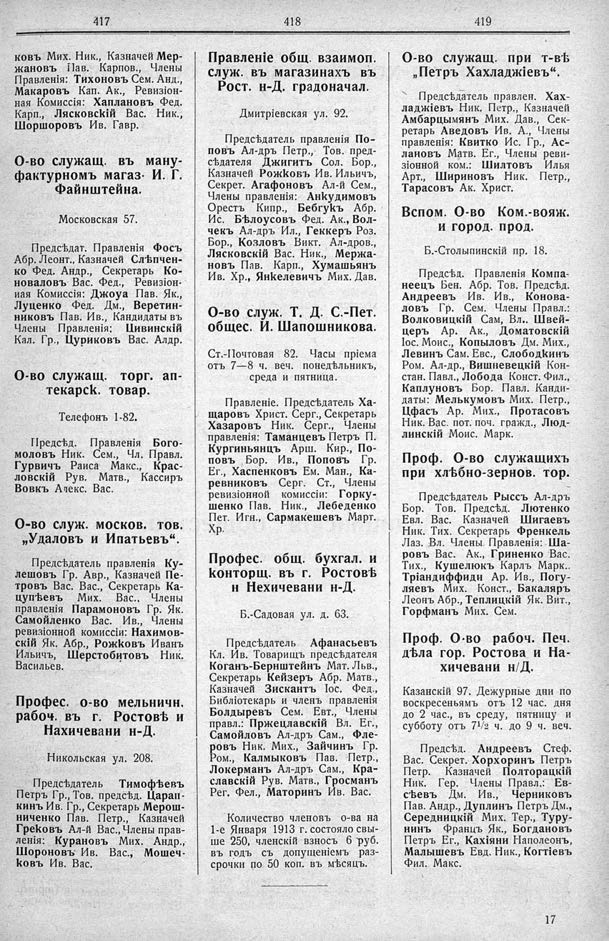

Лист источника 271
Скан

Распознанный текст
417
ковъ Мих. Ник., Казначей Мер-
жановъ Пав. Карпов., Члены
Правленія: Тихоновъ Сем. Анд.,
Макаровъ Кап. Ак., Ревизіон-
ная Комиссія: Хаплановъ Фед.
Карп., Лясковскій Вас. Ник.,
Шоршоровъ Ив. Гавр.
О-во служащ. въ ману-
фактурномъ магаз. И. Г.
Файнштейна.
Московская 57.
Предсѣдат. Правленія Фосѣ
Абр. Леонт., Казначей Слѣпчен-
ко Фед. Андр., Секретарь Ко-
новаловъ Вас. Фед., Ревизіон-
ная Комиссія: Джоуа Пав. Як.,
Луценко Фед. Дм., Веретин-
никовъ Пав. Ив., Кандидаты въ
Члены Правленія; Цивинскій
Кал. Гр., Цуриковъ Вас. Алдр.
О-во служащ. торг. ап-
текарск. товар.
Телефонъ 1-82.
Предсѣд. Правленія Бого-
моловъ Ник. Сем., Чл. Правл.
Гурвичъ Раиса Макс., Крас-
ловскій Рув. Матв., Кассиръ
Вовкъ Алекс. Вас.
О-во служ. москов. тов.
„Удаловъ и Ипатьевъ“.
Предсѣдатель правленія Ку-
лешовъ Гр. Авр., Казначей Пе-
тровъ Вас. Вас., Секретарь Ка-
цупѣевъ Мих. Вас., Члены
правленія Парамоновъ Гр. Як.
Самойленко Вас. Ив., Члены
ревизіонной комиссіи: Нахимов-
скій Як. Абр., Рожковъ Иванъ
Ильичъ, Шерстобитовъ Ник.
Васильев.
Профес. о-во мельничн.
рабоч. въ г. Ростовѣ и
Нахичевани н-Д.
Никольская ул. 208.
Предсѣдатель Тимофѣевъ
Петръ Гр., Тов. предсѣд. Царап-
кинъ Ив. Гр., Секретарь Мерош-
ниченко Пав. Петр., Казначей
Грековъ Ал-й Вас., Члены прав-
ленія: Курановъ Мих. Андр.,
Шороновъ Ив. Вас., Мошеч-
ковъ Ив. Вас.
418
Правленіе общ. взаимоп.
служ. въ магазинахъ въ
Рост. н-Д. градоначал.
Дмитріевская ул. 92.
Предсѣдатель правленія По-
повъ Ал-дръ Петр., Тов. пред-
сѣдателя Джигитъ Сол. Бор.,
Казначей Рожковъ Ив. Ильичъ,
Секрет. Агафоновъ Ал-й Сем.,
Члены правленія: Анкудимовъ
Орестъ Кипр., Бебгукъ Абр.
Ис. Бѣлоусовъ Фед. Ак., Вол-
чекъ Ал-дръ Ил., Геккеръ Роз.
Бор., Козловъ Викт. Ал-дров.,
Лясковскій Вас. Ник., Мержа-
новъ Пав. Карп., Хумашьянъ
Ив. Хр., Янкелевичъ Мих. Дав.
О-во служ. Т. Д. С.-Пет.
общес. И. Шапошникова.
Ст.-Почтовая 82. Часы пріема
отъ 7—8 ч. веч. понедѣльникъ,
среда и пятница.
Правленіе. Предсѣдатель Ха-
щаровъ Христ. Серг., Секретарь
Хазаровъ Ник. Серг., Члены
правленія: Таманцевъ Петръ П.
Кургиньянцъ Арш. Кир., По-
повъ Бор. Ив., Поповъ Гр.
Ег., Хаспенковъ Ем. Ман., Ка-
ревниковъ Серг. Ст., Члены
ревизіонной комиссіи: Горку-
шенко Пав. Ник., Лебеденко
Пет. Игн., Сармакешевъ Март.
Хр.
Профес. общ. бухгал. и
конторщ. въ г. Ростовѣ
н Нехичевани н-Д.
Б.-Садовая ул. д. 63.
Предсѣдатель Афанасьевъ
Кл. Ив. Товарищъ предсѣдателя
Коганъ-Бернштейнъ Мат. Льв.,
Секретарь Кейзеръ Абр. Матв.,
Казначей Зискантъ Іос. Фед.,
Библіотекарь и членъ правленія
Болдыревъ Сем. Евт., Члены
правл.: Пржецлавскій Вл. Ег.,
Самойловъ Ал-дръ Сам., Фле-
ровъ Ник. Мих., Зайчинъ Гр.
Ром., Калмыковъ Пав. Петр.,
Локерманъ Ал-дръ Сам., Кра-
славскій Рув. Матв., Гросманъ
Рег. Фел., Маторинъ Ив. Вас.
Количество членовъ о-ва на
1-е Января 1913 г. состояло свы-
ше 250, членскій взносъ 6 руб.
въ годъ съ допущеніемъ раз-
срочки по 50 коп. въ мѣсяцъ.
419
О-во служащ. при т-вѣ
„Петръ Хахладжіевъ“.
Предсѣдатель правлен. Хах-
ладжіевъ Ник. Петр., Казначей
Амбарцымянъ Мих. Дав., Сек-
ретарь Аведовъ Ив. А., Члены
правленія: Квитко Ис. Гр., Ас-
лановъ Матв. Ег., Члены реви-
зіонной ком.: Шилтовъ Илья
Арт., Шириновъ Ник. Петр.,
Тарасовъ Ак. Христ.
Вспом. О-во Ком.-вояж.
и город. прод.
Б.-Столыпинскій пр. 18.
Предсѣд. Правленія Компа-
неецъ Бен. Абр. Тов. Предсѣд.
Андреевъ Ив. Ив., Конова-
ловъ Гр. Сем. Члены Правл.:
Волковицкій Сам, Вл.. Швей-
церъ Ар. Ак., Доматовскій
Іос. Моис., Копыловъ Дм. Мих.,
Левинъ Сам. Евс., Слободкинъ
Ром. Ал-др., Вишневецкій Кон-
стан. Павл., Лобода Конст. Фил.,
Каплуновъ Бор. Павл. Канди-
даты: Мелькумовъ Мих. Петр.,
Цфасъ Ар. Мих., Протасовъ
Ник. Вас. пот. поч. гражд., Люд-
линскій Моис. Марк.
Проф. О-во служащихъ
при хлѣбно-зернов. тор.
Предсѣдатель Рыссъ Ал-дръ
Бор. Тов. Предсѣд. Лютенко
Евл. Вас. Казначей Шигаевъ
Ник. Тих. Секретарь Френкель
Лаз. Вл. Члены Правленія: Ша-
ровъ Вас. Ак., Гриненко Вас.
Тих., Кушелюкъ Карлъ Марк..
Тріандиффиди Ар. Ив., Погу-
ляевъ Мих. Конст., Бакаляръ
Леонъ Абр., Теплицкій Як. Вит.,
Горфманъ Мих. Сем.
Проф. О-во рабоч. Печ.
дѣла гор. Ростова и На-
хичевани н/Д.
Казанскій 97. Дежурные дни по
воскресеньямъ отъ 12 час. дня
до 2 час., въ среду, пятницу и
субботу отъ 7½ ч. до 9 ч. веч.
Предсѣд. Андреевъ Стеф.
Вас. Секрет. Хорхоринъ Петръ
Петр. Казначей Полторацкій
Ник. Гер. Члены Правл.: Ев-
сѣевъ Дм. Ив., Черниковъ
Пав. Андр., Дуплинъ Петръ Дм.,
Середницкій Мих. Тер., Туру-
нинъ Францъ Як., Богдановъ
Петръ Ег., Кахіяни Наполеонъ,
Малышевъ Евд. Ник., Когтіевъ
Фил. Макс.
17